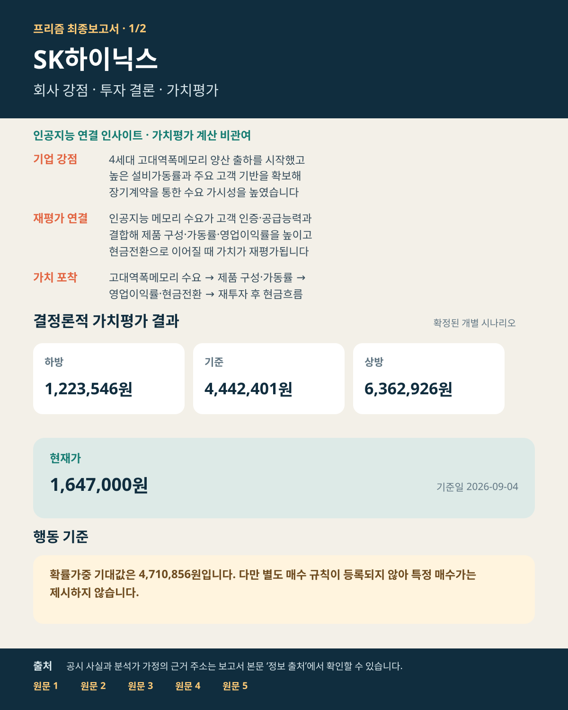
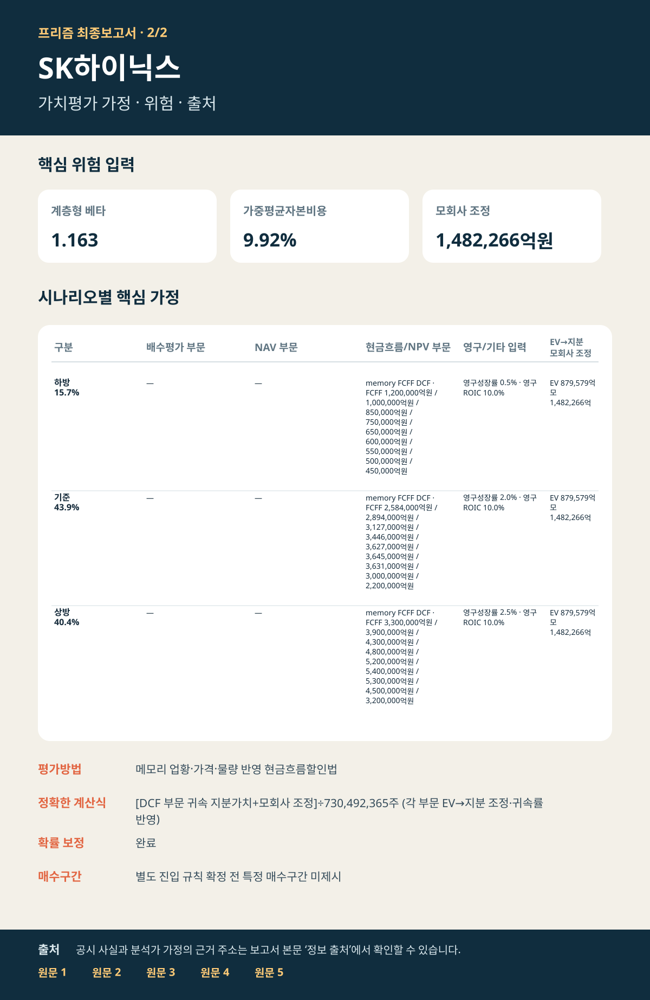

SK하이닉스 · 000660 · 코스피
고대역폭메모리 공급 우위가 현금흐름으로 이어질 수 있는가
인공지능 메모리 수요·수익성·현금전환을 연결한 가치평가 · 자료 기준 2026년 9월 4일
4세대 고대역폭메모리 양산 출하, 높은 설비가동률, 주요 고객과의 장기계약이 인공지능 메모리 수요를 현금흐름으로 전환하는 핵심 축입니다. 기준 내재가치는 4,442,401원, 확률가중 기대값은 4,710,856원이며, 현재가에서는 메모리 업황 정상화·대규모 설비투자·현금전환 지속 여부를 함께 확인해야 합니다.
하방 · 15.7%1,223,546원
기준 · 43.9%4,442,401원
상방 · 40.4%6,362,926원
핵심 투자포인트
- 고대역폭메모리 양산 출하와 주요 고객 접근성이 핵심 경쟁력입니다.
- 매출 성장률·영업이익률·현금전환율·설비투자 비중의 연속 경로가 내재가치를 좌우합니다.
- 별도 진입 규칙이 확정되지 않아 특정 매수가는 제시하지 않습니다.
판단 변경 조건
- 상방: 출하 확대가 영업현금흐름 개선으로 이어지고 현금전환율이 유지될 때.
- 하방: 수율·인증 차질, 가격 급락, 재고 증가, 설비투자 부담이 현금흐름을 앞지를 때.
가치평가와 핵심 가정
| 구분 | 내재가치 | 확률 |
|---|---|---|
| 하방 | 1,223,546원 | 15.7% |
| 기준 | 4,442,401원 | 43.9% |
| 상방 | 6,362,926원 | 40.4% |
| 확률가중 기대값 | 4,710,856원 | 보정 완료 |
위험 입력
계층형 베타 1.163 · 가중평균자본비용 9.924%
메모리 업황·가격·물량을 현금흐름으로 연결하고 공시된 확정 투자만 반영합니다.
시장 비교
현재가 1,647,000원 (2026-09-04)
기준 내재가치 대비 상승여력 169.7%
증권사 참고치 대비 프리즘 기준 내재가치 차이 +48.1%
증권사·시장 비교
증권사 목표가와 현재가는 가치평가 확정 뒤 참고했으며 선행 가정을 바꾸는 데 사용하지 않았습니다.
인공지능 인사이트 — 환경 변화 × 기업 강점
인공지능 서버 확대로 고대역폭메모리 수요와 고성능 메모리 공급 능력의 희소성이 커지고 있습니다. SK하이닉스의 양산 출하·높은 설비가동률·주요 고객 기반이 제품 구성과 영업이익률을 거쳐 현금전환으로 이어질 때 기존 경쟁력이 실제 기업가치로 재평가됩니다.
반증 조건: 수율·인증 차질, 빠른 메모리 가격 정상화, 재고 증가, 설비투자 부담의 현금흐름 초과.
최종 요약 이미지


정보 출처 — 원문 바로 확인
분석 범위와 유의사항
- 전체 기업 내재가치 평가.
- 33개 표준 분석 단계 완료.
- 가치평가·확률·감사·결과 확정 절차 통과.
- 현재가와 증권사 자료는 가치평가 확정 후 비교.
- 회사 공시 사실, 분석가 가정, 인공지능 연결 인사이트를 구분.
작성 근거와 계산 과정
세부 검증정보는 마크다운 검증본에 보관합니다.
본 보고서는 프리즘 가치평가 모델의 확정 결과를 사용자용 한글 표준 HTML 양식으로 표시한 것입니다.